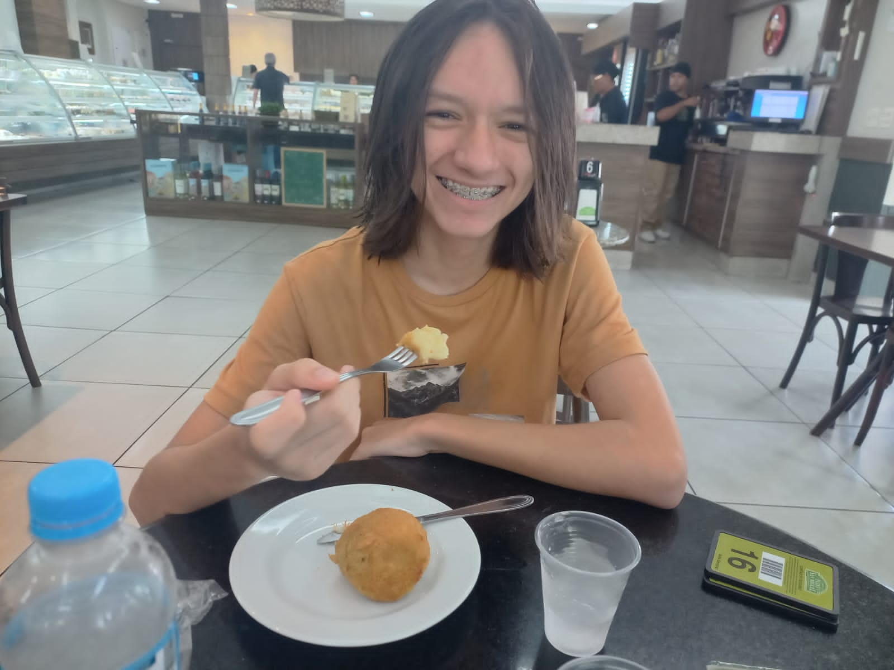

O que eu gosto?
Aqui estão alguns dos meus gostos.
- Desenhar. Esse tá mais pra um sonho, porque eu desenho, mas ainda quero ficar melhor.
- Comer. Quem não gosta né?
- Dormir
- Jogar futebol, e faço treino no Iate. Incrivelmente, eu já marquei 6 gols em um jogo.
Essa coisa que você tá vendo é a Pitu, meu cachorro.